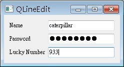

QLineEdit提供一個文字輸入欄位，可以輸入文字或數字，我們可以對輸入作驗證，或是設定為一般顯示、密碼顯示等等，以下的程式是個簡單的設定示範：
#include <QApplication>
#include <QLabel>
#include <QLineEdit>
#include <QIntValidator>
#include <QGridLayout>
int main(int argc, char *argv[]) {
QApplication app(argc, argv);
QWidget *window = new QWidget;
window->setWindowTitle("QLineEdit");
QLabel *nameLabel = new QLabel("Name");
QLabel *pwdLabel = new QLabel("Password");
QLabel *luckyLabel = new QLabel("Lucky Number");
QLineEdit *nameLine = new QLineEdit;
QLineEdit *pwdLine = new QLineEdit;
pwdLine->setEchoMode(QLineEdit::Password);
QLineEdit *luckyLine = new QLineEdit;
luckyLine->setValidator(new QIntValidator(luckyLine));
QGridLayout *layout = new QGridLayout;
layout->addWidget(nameLabel, 0, 0);
layout->addWidget(nameLine, 0, 1);
layout->addWidget(pwdLabel, 1, 0);
layout->addWidget(pwdLine, 1, 1);
layout->addWidget(luckyLabel, 2, 0);
layout->addWidget(luckyLine, 2, 1);
window->setLayout(layout);
window->show();
return app.exec();
}setEchoMode()可以設定輸入文字的顯示方式，有一般顯示 （QLineEdit::Normal）、密碼顯示（QLineEdit::Password）與不回應文字輸入（QLineEdit::NoEcho），密碼顯示會使用遮罩字元（像是*）來回應使用者的輸入。
setValidator()設定是否對欄位的輸入進行驗證，QIntValidator用於設定整數的驗證方式，也可以設定其它的驗證器，像是QDoubleValidator用於浮點數的驗證。
QLineEdit還可以設定文字對齊方式，有置左對齊（Qt::AlignLeft）、置中對齊（Qt::AlignCenter）與置右對齊（Qt::AlignRight）等設定方式，也可以使用setReadOnly()設定QLineEdit的欄位是否可編輯。
下圖為執行的畫面參考：
